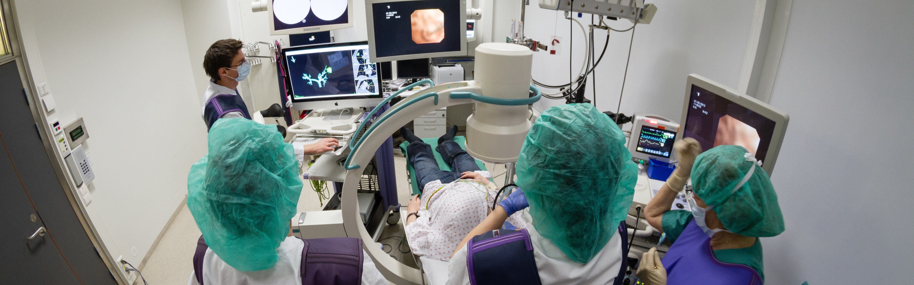
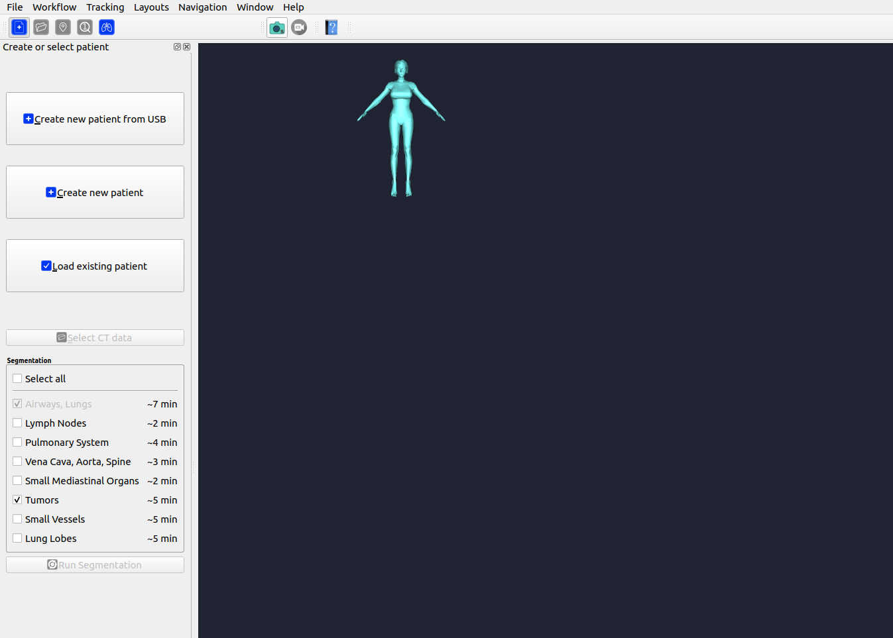
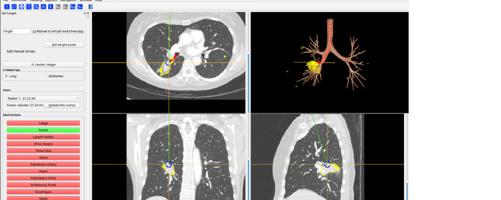
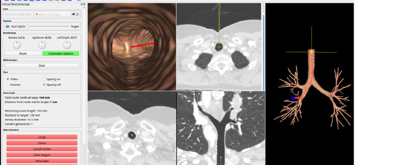
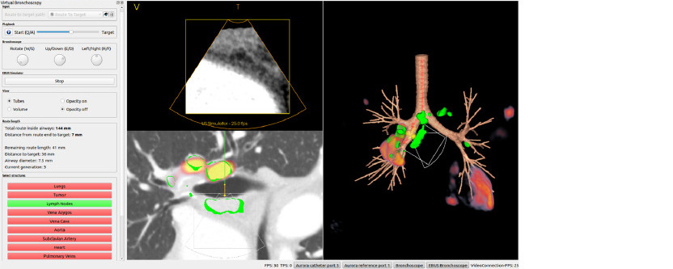
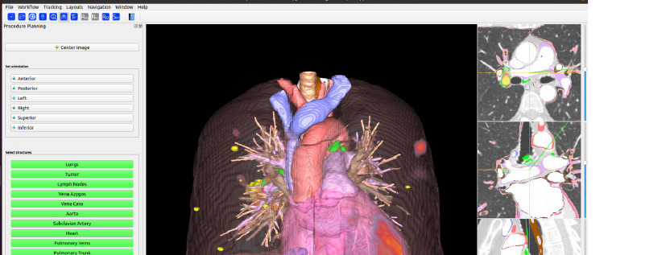

An Open Source Research Platform for Image-Guided Bronchoscopy

Fraxinus is an open-source research platform for image-guided bronchoscopy, developed by SINTEF Medical Technology in collaboration with St. Olavs Hospital, Trondheim University Hospital, Norway. Built on top of CustusX, Fraxinus guides the user through a streamlined pre-procedure workflow: CT data is imported directly from a USB drive or disk, airways and surrounding anatomy are segmented automatically, a route to the target lesion is planned, and the procedure is rehearsed via virtual bronchoscopy and EBUS simulation — all in four steps.
The source code is available on GitLab. A public mirror is also available on GitHub. Bug reports and feature requests are welcome on GitLab Issues.
SINTEF Digital
Department of Health Research
Medical Technology
P.O. Box 4760 Torgarden
NO-7465 Trondheim
Norway
Fraxinus is an open-source research platform for pre-procedure planning and simulation in bronchoscopy, developed by SINTEF Medical Technology in collaboration with St. Olavs Hospital, Trondheim University Hospital, Norway. It is built on top of CustusX and is free to use under a BSD-3 license.
The source code is available on GitLab and GitHub.
Fraxinus is free to use for everyone under a BSD-3 license.
Fraxinus is developed by SINTEF Medical Technology for St. Olavs Hospital, Trondheim University Hospital, Norway. The project has received funding from the Norwegian Research Council and several EU projects.
When publishing scientific work that uses Fraxinus, please cite the following publication:
Janne Beate Lervik Bakeng, Erlend Fagertun Hofstad, Ole Vegard Solberg, Jon Eiesland, Geir Arne Tangen, Tore Amundsen, Thomas Langø, Ingerid Reinertsen, Tormod Selbekk, Håkon Olav Leira. Using the CustusX toolkit to create an image guided bronchoscopy application: Fraxinus, PLOS ONE, 02/2019, DOI: 10.1371/journal.pone.0211772
Fraxinus is a pre-procedure planning and simulation platform for bronchoscopy research, built on top of CustusX. It is developed by SINTEF Medical Technology in collaboration with St. Olavs Hospital, Trondheim University Hospital, Norway, and is designed for use by expert personnel in a clinical research setting.
The application is organized into four steps, accessed via the workflow icons in the top toolbar. Fraxinus advances automatically to the next step when a task is completed, but any previous step can be revisited at any time.
1. Patient
The starting point for every session. Three options are available:

CT data is imported as a standard high-resolution Thorax CT in DICOM format. A PET series and the corresponding PET CT can optionally be imported at the same time to support metabolic target planning. When PET data is present, PET-to-CT registration runs automatically as part of segmentation.
The following anatomical structures can be segmented from the CT. Airways and lungs are always included; the remaining structures are optional:
When segmentation completes, Fraxinus advances automatically to the Set Target step.
2. Set Target
Click in the CT to place a bronchoscopy target. The planned route from the trachea to the
target is computed automatically and shown as a red line in the 3D view. A list of detected
tumors and nodules (sorted by size) is available for quick target selection. If the target
lies beyond the automatically segmented airways, manual airway points can be added to
extend the route.

3. Virtual Bronchoscopy
A virtual camera navigates the segmented airway tree from the trachea to the target,
providing an endoscopic fly-through view synchronized with orthogonal CT cross-sections and
a 3D overview. All segmented structures can be shown or hidden individually.
An EBUS simulator is also available within this step. A virtual endobronchial ultrasound probe (depth, 4 cm) is swept along the airway wall following the planned route, allowing the user to locate lymph nodes and other structures in a simulated ultrasound sector view alongside the CT and 3D model.


4. Procedure Planning
A general-purpose planning view displaying all segmented structures simultaneously in both
2D cross-sections and a 3D scene. Useful for reviewing anatomy and discussing the procedure
approach before entering the bronchoscopy suite.

Select a type of documentation depending on your needs:
Guides and references for using Fraxinus in your research workflow.
API references, architecture overview, and instructions for extending Fraxinus.
Fraxinus releases are published on GitLab. Each release includes installers and release notes describing what has changed.
Download the latest Fraxinus release from GitLab:
View Releases on GitLab